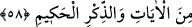

HZ. ÎSÂ’NIN GÖĞE YÜKSELTİLMESİ
55. Allah buyurmuştu ki: Ey Îsâ! Seni vefat ettireceğim, seni nezdime
yükselteceğim, seni inkâr edenlerden arındıracağım ve sana uyanları kıyâmete
kadar kâfirlerden üstün kılacağım. Sonra dönüşünüz bana olacak. İşte o zaman
ayrılığa düştüğünüz şeyler hakkında aranızda ben hükmedeceğim.
56. İnkâr edenler var ya, onları dünyâ ve âhirette şiddetli bir azaba
çarptıracağım; onların hiç yardımcıları da olmayacak.
57. İman edip iyi davranışlarda bulunanlara gelince, Allah onların mükâfatlarını
eksiksiz verecektir. Allah zâlimleri sevmez.
58. (Rasûlüm!) Bu söylenenleri biz sana âyetlerden ve hikmet dolu Kur’ân’dan
okuyoruz.
Allah’ın şöyle dediği vakti hatırla. “Ey Îsâ şüphesiz ki seni öldürecek olan benim.”
Sana takdir ettiğim müddeti tamamlatacağım. Kâfirlerin seni öldürmesinden
koruyacağım ve sana yazdığım ecele kadar seni tehir edeceğim. Seni onların
öldürmesiyle değil, kendi ecelinle öldüreceğim.
“Seni kendime yükseltip kaldıracağım.” Seni ikrâm mahallime, meleklerimin
makamına çıkaracağım. (Îsâ göğe yükseltilirken) “Seni kendime yükselteceğim”
buyurması Îsâ’nın şânını yüceltmek içindir. İbrâhîm (a.s.)’ın “Ben Rabbime
gidiyorum.” (Saffât, 37/99) sözünün mânası da aynıdır. İbrâhîm (a.s.) Irak’dan Şam’a
gitmişti. Hacılara, Allah’ın misafirleri denilir. Kâbe-i Muazzama civarında oturanlara
Allah’ın komşuları denilir. Bütün bu ifadeler anılanların şânını yüceltmektir. Çünkü
Cenâb-ı Hak mekândan münezzehtir.
“Seni küfredenler içinden tertemiz çıkaracağım.” Onlardan seni uzaklaştırıp, kenara
çekeceğim. Onların kötü komşuluğundan habîs arkadaşlıklarından ve kirli
muaşeretlerinden temizleyeceğim.